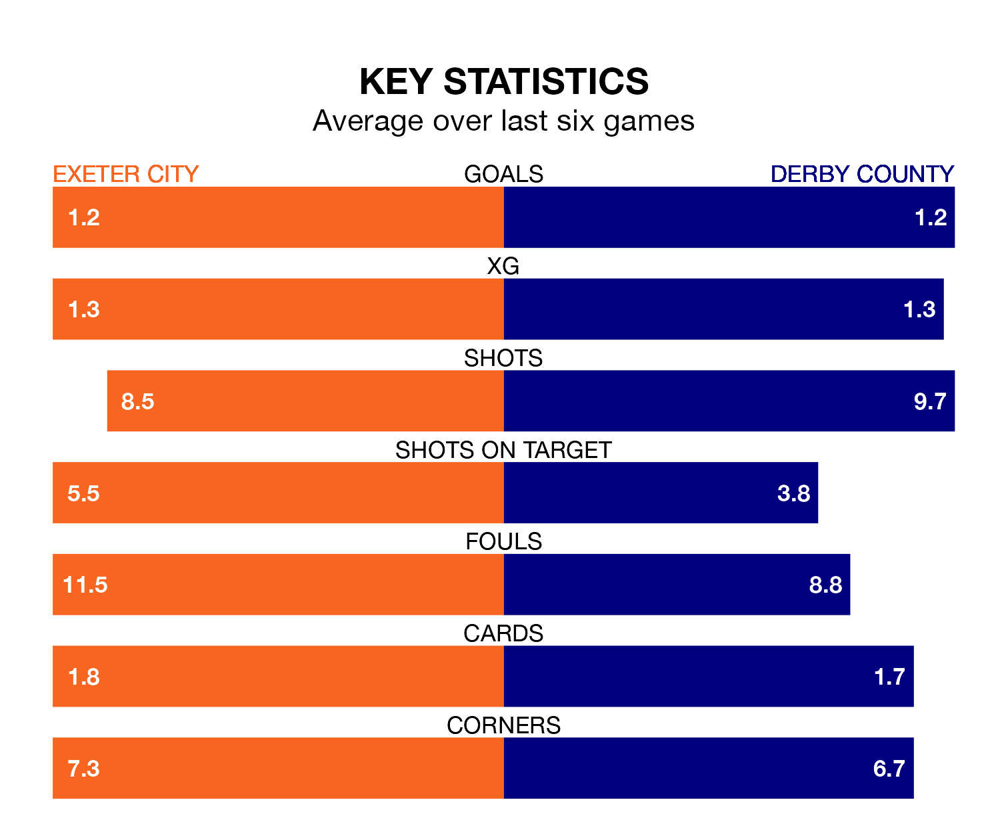

Derby County are strong favourites to take all three points despite Exeter City's home advantage in Tuesday's late match at St James Park.
*Betting Company* are offering odds of 1.76 on Derby sealing the win, with the visitors sitting second in EFL League One table.
Exeter, who are 14th in the league and 21 points behind the Rams, are priced at 4.05 to win. A draw is set at 3.62.
With 25 goals in 32 games so far this season, Exeter are scoring at below the league average rate with 0.8 goals per game. And they are conceding at an average rate, letting in 43 goals at a rate of 1.3 per game.
Derby, meanwhile, are above average scorers, with 1.7 goals per game, compared to a league average of 1.3. They have conceded 0.9 goals per game.
County's Nathaniel Mendez-Laing is the league's most creative player, racking up 11 assists in 31 appearances so far this season.
For City, Demetri Mitchell has set up the most goals, having laid on three assists in 14 games.
The hosts are in good form in EFL League One, with four wins and a draw from their last six games.
With three wins and two draws over that period, the Rams' form is slightly worse – they have taken 11 points from 18, compared to Exeter's 13.
In the last three years, Exeter and Derby have played each other on three occasions. Derby won two of them and they drew once.
Their last meeting was on October 24, when Derby won 2-0 at home.
Exeter's last match was on Saturday, a 2-1 win against Wigan Athletic, with Jack Aitchison and Mohamed Eisa getting the goals for Exeter.
Derby drew 1-1 with Shrewsbury Town last time out, also on Saturday, with Max Bird on the scoresheet.
Updated: 09:02 (UTC), 13/02/24